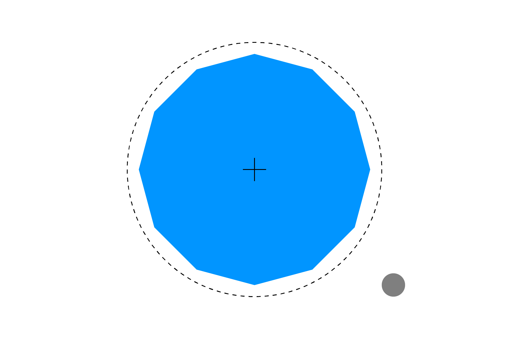

Перевіряти зіткнення з точкою зручно для курсора миші, але в іграх більшість об’єктів — м’ячі, монети, астероїди чи персонажі — мають власний об’єм. На щастя, перехід від алгоритму «Точка і Круг» до перевірки двох кругів потребує лише однієї маленької зміни!
Уявіть дві більярдні кулі, що котяться назустріч одна одній. У момент, коли їхні краї щойно торкнулися, чому дорівнює відстань між їхніми центрами? Вона точно дорівнює радіусу першої кулі плюс радіус другої!
Тож спочатку, як і в попередньому розділі, обчислюємо відстань між центрами двох кругів (c1x, c1y) та (c2x, c2y) за теоремою Піфагора:
const distX = c1x - c2x;
const distY = c1y - c2y;
const distance = sqrt((distX * distX) + (distY * distY));А тепер порівнюємо цю відстань із сумою їхніх радіусів (c1r + c2r). Якщо відстань між центрами менша або дорівнює сумі радіусів — круги перетинаються:
if (distance <= c1r + c2r) {
return true;
}
return false;Ось як виглядає повний інтерактивний приклад:
// координати та радіус першого (рухомого) круга
let c1x = 0;
let c1y = 0;
const c1r = 30;
// координати та радіус другого (статичного) круга
let c2x;
let c2y;
const c2r = 100;
function setup() {
createCanvas(window.innerWidth, window.innerHeight);
noStroke();
c2x = width / 2;
c2y = height / 2;
}
function draw() {
background(255);
// оновлюємо положення першого круга координатами курсора
c1x = mouseX;
c1y = mouseY;
// перевіряємо, чи перетинаються два круги
const isColliding = collideCircleCircle(c1x, c1y, c1r, c2x, c2y, c2r);
// змінюємо колір центрального круга при зіткненні
if (isColliding) {
fill(255, 150, 0);
} else {
fill(0, 150, 255);
}
// малюємо статичний центральний круг
ellipse(c2x, c2y, c2r * 2, c2r * 2);
// малюємо рухомий круг курсора
fill(0, 150);
ellipse(c1x, c1y, c1r * 2, c1r * 2);
}
// перевірка на зіткнення між двома кругами
function collideCircleCircle(c1x, c1y, c1r, c2x, c2y, c2r) {
// знаходимо відстань між центрами кругів за теоремою Піфагора
const distX = c1x - c2x;
const distY = c1y - c2y;
const distance = sqrt((distX * distX) + (distY * distY));
// якщо відстань не перевищує суму двох радіусів — круги стикаються
if (distance <= c1r + c2r) {
return true;
}
return false;
}Алгоритм зіткнення круга з кругом надзвичайно популярний у розробці ігор. Навіть коли об’єкти мають складну форму (наприклад, космічний корабель, квітка чи багатокутний камінь), навколо них часто створюють невидиме «обмежувальне коло» (bounding circle). Попри невелику похибку на кутах, така перевірка виконується блискавично швидко і чудово підходить для динамічних сцен.

Хоча обмежувальне коло захоплює трохи порожнього простору біля граней, воно дає чудове й швидке наближення для цього дванадцятикутника (додекагона).Можливо, ви замислилися: «А чому ми розглядаємо лише круги, а не довільні овали (еліпси)?» Хоча візуально еліпс — це просто розтягнутий круг, у нього немає єдиного радіуса: відстань від центра до краю постійно змінюється залежно від кута. Через це точна математика для перетину еліпсів виявляється набагато складнішою. Якщо ж вам колись знадобиться готове рішення для еліпсів, зазирніть у цей цікавий інтерактивний скетч на OpenProcessing.
Далі: Завдання 1